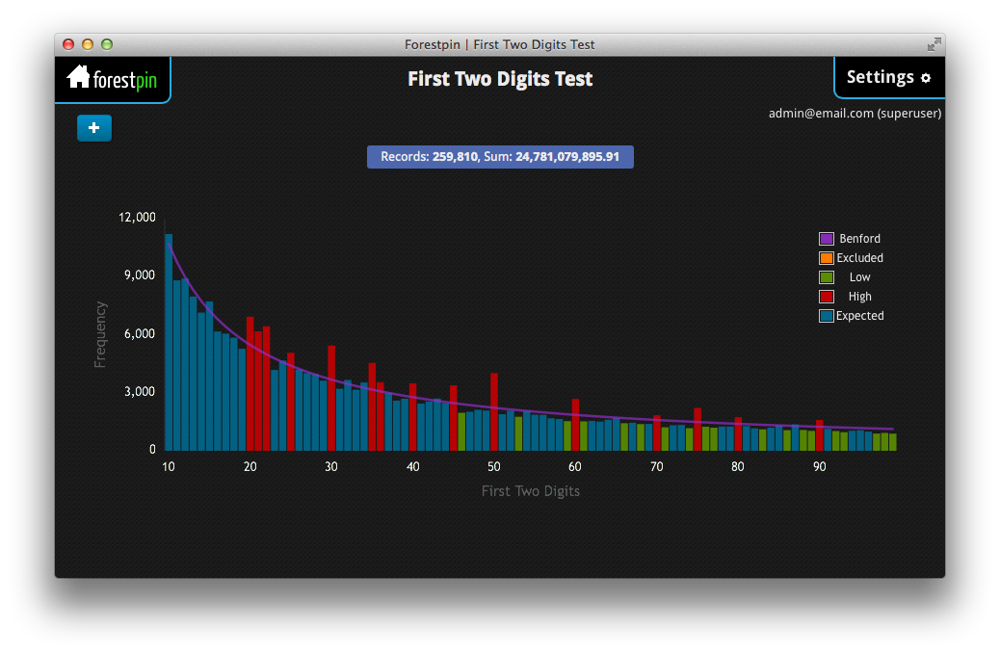
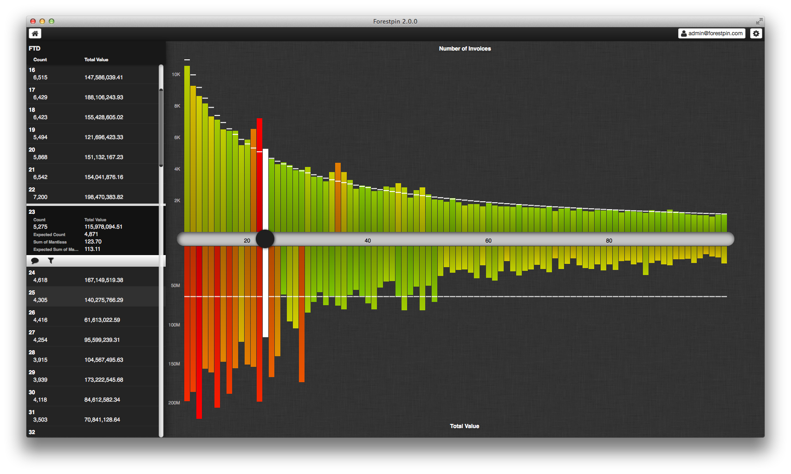
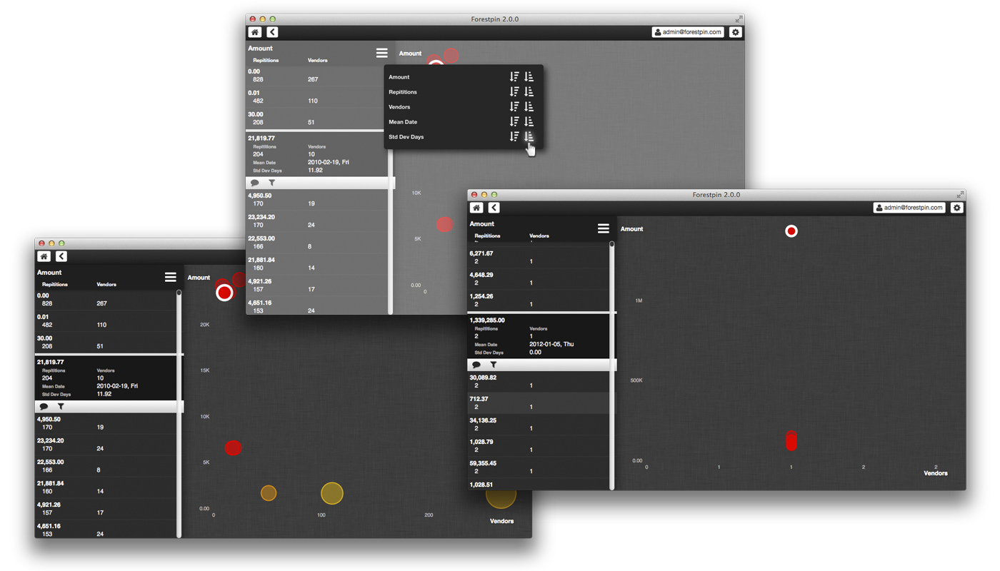
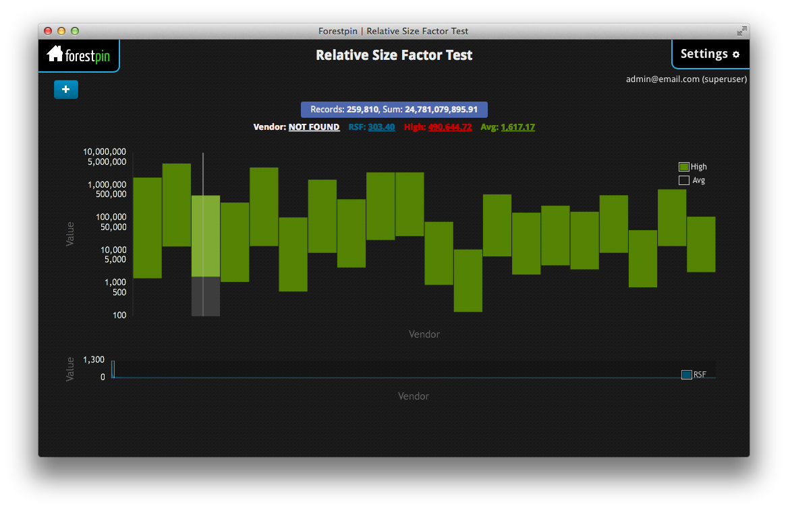
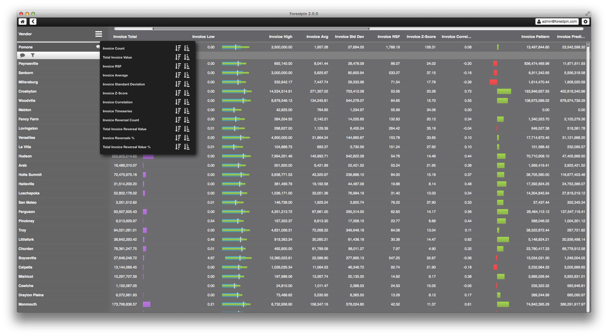
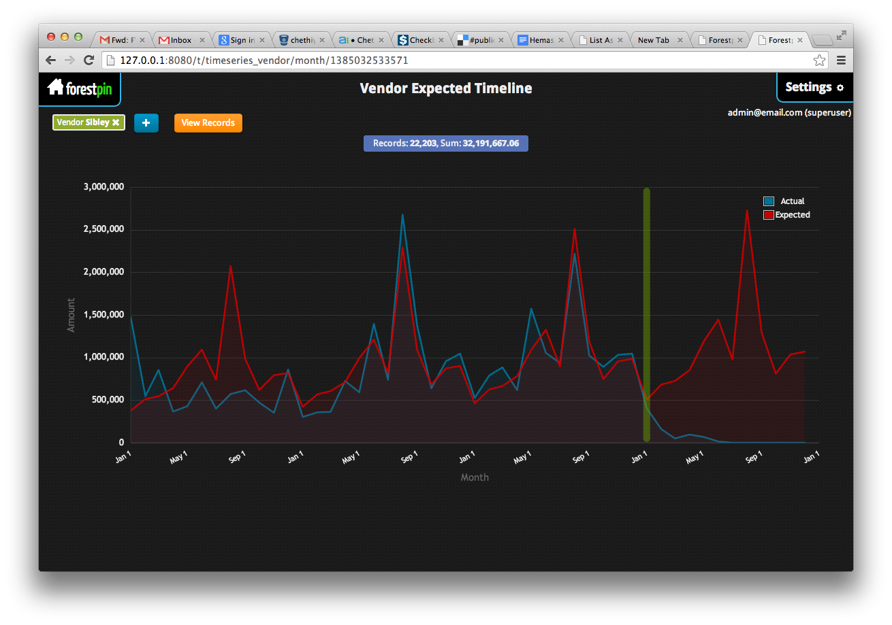

We released the new version of Forestpin Enterprise last week. The new version is a complete rewrite of both the backend and UI. The backend was rewritten to be faster and to introduce a bunch of new features and analytics. The user interface was redesigned to be much more user friendly and also with focus on mobile devices such as tablets.
Forestpin Enterprise Redesign
November 27, 2013
Teachings of visualizations experts such as Edward Tufte, Stephan Few and Naomi Robbins were followed during the user interface redesign. We have also changed the way we presented the results of analyses that existed in previous version as well. The images below are screenshots of the new version vs. the previous version and what made us make the changes.
Benford's Law Analysis

In the previous version you could only see the distribution of number of transactions for each first two digit combination, whereas in the new version we display the distribution of the sum of values by first two digits. We are using the concept of top-down graphs to show two different related values, so that the users can come to better conclusions.

For instance, with this top down display one can easily figure out that the spike in summation test at 29 (the downward orange bar) is due to a set of large valued transaction and not because there is a high number of transactions with FTD 29 (no spike in frequency distribution). Also we have colored the bars with a range of colors, unlike 3 colors in older version, to indicate the deviation. This makes it very easy to spot the red flags.
Duplicates Analysis

Many found the duplicates analysis in our previous version very useful; they also found the visualization very pretty. Still it could be improved. In the redesign, we have introduced a column on the left hand side to show the details (value, number of repetitions, average date, etc) about possible duplicated transactions. This is very useful to spot suspicious duplicates if you are familiar with numbers and the transaction values look odd. For instance, although you can infer the rough amount value from the position of the bubble you will have to select the bubble to find the exact amount.

Moreover, as you can see, we have also introduced sorting which is very useful in analysis duplicates, with our backend rewrite you can sort duplicates by different attributes almost instantaneously.
Account Based Analysis / Relative Size Factor Analysis

The above visualization shows vendors with highest relative size factor; that is vendors with unusually large payments. The graph is in log scale with bottom being the average transaction value for each vendor and top being highest transaction value; therefore, the height of the bar is proportional to the log of RSF.

With the redesign, we display results of all analysis for each vendor in a table with inline visualizations. This easily beats what we had in previous version, because now the user is presented clearly with lot more information. The user can sort by results from any analysis to quickly find the red flags.
Timeseries Analysis

This compares the predicted pattern with actual data to show whether there is a deviation. In the new version, we've taken this to whole new level with a beautiful bar graph by using color to indicate the deviation. With this design even someone with absolutely no knowledge of the dataset would be able to identify the troubling months.

Passing File Descriptors Between Processes Using Sendmsg() and Recvmsg()
January 11, 2011
Using this technique you can pass file descriptors between processes using sendmsg() and recvmsg() functions using UNIX Domain Protocol. Any descriptor can be passed using this method not just a file descriptor.
This is quite useful when you want to balance load in a multi-core system. Other way of passing file descriptors is by forking the process, but in this case you can pass file descriptors between different processes at anytime.
Creating the UNIX Domain Protocol server
SOCKET_PATH was set to /tmp/unix_socket
int create_server() {
struct sockaddr_un addr;
int fd;
if ((fd = socket(AF_LOCAL, SOCK_STREAM, 0)) < 0) {
log_error("Failed to create server socket");
return fd;
}
memset(&addr, 0, sizeof(addr));
addr.sun_family = AF_LOCAL;
unlink(SOCKET_PATH);
strcpy(addr.sun_path, SOCKET_PATH);
if (bind(fd, (struct sockaddr *) &(addr),
sizeof(addr)) < 0) {
log_error("Failed to bind server socket");
return -1;
}
if (listen(fd, MAX_PENDING) < 0) {
log_error("Failed to listen on server socket");
return -1;
}
setnonblocking(fd);
/* Add handler to handle events on fd */
return fd;
}I used epoll for handling events, so adding a handler was something like this.
hash_set(ioloop->handlers, fd, handler);
e.data.fd = fd;
e.events = EPOLLIN;
if(epoll_ctl(ioloop->epfd, EPOLL_CTL_ADD, fd, &e) < 0) {
log_error("Failed to insert handler to epoll");
return -1;
}Connections to the server should be accepted with accept() similar to TCP sockets.
Connecting to the server
int connect_server() {
struct sockaddr_un addr;
int fd;
if ((fd = socket(AF_LOCAL, SOCK_STREAM, 0)) < 0) {
log_error("Failed to create client socket");
return fd;
}
memset(&addr, 0, sizeof(addr));
addr.sun_family = AF_LOCAL;
strcpy(addr.sun_path, SOCKET_PATH);
if (connect(fd,
(struct sockaddr *) &(addr),
sizeof(addr)) < 0) {
log_error("Failed to connect to server");
return -1;
}
setnonblocking(fd);
/* Add handler to handle events */
return fd;
}I was adding EPOLLOUT listener to the socket whenever there were file descriptors to be passed to the other process.
Receiving a file descriptor
static int
recv_file_descriptor(
int socket) /* Socket from which the file descriptor is read */
{
int sent_fd;
struct msghdr message;
struct iovec iov[1];
struct cmsghdr *control_message = NULL;
char ctrl_buf[CMSG_SPACE(sizeof(int))];
char data[1];
int res;
memset(&message, 0, sizeof(struct msghdr));
memset(ctrl_buf, 0, CMSG_SPACE(sizeof(int)));
/* For the dummy data */
iov[0].iov_base = data;
iov[0].iov_len = sizeof(data);
message.msg_name = NULL;
message.msg_namelen = 0;
message.msg_control = ctrl_buf;
message.msg_controllen = CMSG_SPACE(sizeof(int));
message.msg_iov = iov;
message.msg_iovlen = 1;
if((res = recvmsg(socket, &message, 0)) <= 0)
return res;
/* Iterate through header to find if there is a file descriptor */
for(control_message = CMSG_FIRSTHDR(&message);
control_message != NULL;
control_message = CMSG_NXTHDR(&message,
control_message))
{
if( (control_message->cmsg_level == SOL_SOCKET) &&
(control_message->cmsg_type == SCM_RIGHTS) )
{
return *((int *) CMSG_DATA(control_message));
}
}
return -1;
}Sending a file descriptor
static int
send_file_descriptor(
int socket, /* Socket through which the file descriptor is passed */
int fd_to_send) /* File descriptor to be passed, could be another socket */
{
struct msghdr message;
struct iovec iov[1];
struct cmsghdr *control_message = NULL;
char ctrl_buf[CMSG_SPACE(sizeof(int))];
char data[1];
memset(&message, 0, sizeof(struct msghdr));
memset(ctrl_buf, 0, CMSG_SPACE(sizeof(int)));
/* We are passing at least one byte of data so that recvmsg() will not return 0 */
data[0] = ' ';
iov[0].iov_base = data;
iov[0].iov_len = sizeof(data);
message.msg_name = NULL;
message.msg_namelen = 0;
message.msg_iov = iov;
message.msg_iovlen = 1;
message.msg_controllen = CMSG_SPACE(sizeof(int));
message.msg_control = ctrl_buf;
control_message = CMSG_FIRSTHDR(&message);
control_message->cmsg_level = SOL_SOCKET;
control_message->cmsg_type = SCM_RIGHTS;
control_message->cmsg_len = CMSG_LEN(sizeof(int));
*((int *) CMSG_DATA(control_message)) = fd_to_send;
return sendmsg(socket, &message, 0);
}TCP Echo Server Example in C++ Using Epoll
January 2, 2011
This example is a simple server which accepts connections and echos whatever data sent to the server. This example also demonstrates the use of epoll, which is efficient than poll. In epoll unlike poll all events that need to be monitored are not passed everytime the wait call is made. Epoll uses event registration where events to be watched can be added, modified or removed. This makes it efficient when there are a large number of events to be watched.
IOLoop
In this example the class IOLoop will deal with epoll interface and it will invoke relevant handlers based on events occurred.
class IOLoop {
...
static IOLoop * getInstance();
IOLoop() {
this->epfd = epoll_create(this->EPOLL_EVENTS);
if(this->epfd < 0) {
log_error("Failed to create epoll");
exit(1);
}
...
}
void start() {
for(;;) {
int nfds = epoll_wait(this->epfd, this->events, this->MAX_EVENTS, -1 /* Timeout */);
for(int i = 0; i < nfds; ++i) {
int fd = this->events[i].data.fd;
Handler *h = handlers[fd];
h->handle(this->events[i]);
}
}
}
void addHandler(int fd, Handler *handler, unsigned int events) {
handlers[fd] = handler;
epoll_event e;
e.data.fd = fd;
e.events = events;
if(epoll_ctl(this->epfd, EPOLL_CTL_ADD, fd, &e) < 0) {
log_error("Failed to insert handler to epoll");
}
}
void modifyHandler(int fd, unsigned int events);
void removeHandler(int fd);
};Handlers used in this example are ServerHandler and EchoHandler which derive from class Handler. Handlers have a member function handle which handles the event occurred.
ServerHandler
ServerHandler will create a server socket and handle in coming connections
class ServerHandler : Handler {
...
ServerHandler(int port) {
memset(&addr, 0, sizeof(addr));
if ((fd = socket(PF_INET, SOCK_STREAM, IPPROTO_TCP)) < 0) {
log_error("Failed to create server socket");
exit(1);
}
addr.sin_family = AF_INET;
addr.sin_addr.s_addr = htonl(INADDR_ANY);
addr.sin_port = htons(port);
if (bind(fd, (struct sockaddr *) &addr,
sizeof(addr)) < 0) {
log_error("Failed to bind server socket");
exit(1);
}
if (listen(fd, MAX_PENDING) < 0) {
log_error("Failed to listen on server socket");
exit(1);
}
setnonblocking(fd);
IOLoop::getInstance()->addHandler(fd, this, EPOLLIN);
}
virtual int handle(epoll_event e) {
sockaddr_in client_addr;
socklen_t ca_len = sizeof(client_addr);
int client = accept(fd, (struct sockaddr *) &client_addr,
&ca_len);
if(client < 0) {
log_error("Error accepting connection");
return -1;
}
cout << "Client connected: " << inet_ntoa(client_addr.sin_addr) << endl;
new EchoHandler(client, client_addr);
return 0;
}
};Set Non-blocking
Function setnonblocking sets the file descriptor setting to non-clocking.
flags = fcntl(fd, F_GETFL, 0);
fcntl(fd, F_SETFL, flags | O_NONBLOCK);EchoHandler:handle
EchoHandler will write whatever it reads from the socket
virtual int handle(epoll_event e) {
if(e.events & EPOLLHUP) {
IOLoop::getInstance()->removeHandler(fd);
return -1;
}
if(e.events & EPOLLERR) {
return -1;
}
if(e.events & EPOLLOUT) {
if(received > 0) {
cout << "Writing: " << buffer << endl;
if (send(fd, buffer, received, 0) != received) {
log_error("Error writing to socket");
}
}
IOLoop::getInstance()->modifyHandler(fd, EPOLLIN);
}
if(e.events & EPOLLIN) {
if ((received = recv(fd, buffer, BUFFER_SIZE, 0)) < 0) {
log_error("Error reading from socket");
} else if(received > 0) {
buffer[received] = 0;
cout << "Reading: " << buffer << endl;
}
if(received > 0) {
IOLoop::getInstance()->modifyHandler(fd, EPOLLOUT);
} else {
IOLoop::getInstance()->removeHandler(fd);
}
}
return 0;
}Error checking in this code is minimal so it will probably fail unexpectedly in certain scenarios which I have not come across yet. And please leave a comment if you do find any errors or if there are things that could be improved.